00이 매뉴얼에 대하여
건축공사 공기산정 시스템은 준비기간·작업일수·비작업일수·정리기간을 더해 공공 건설공사의 공사기간을 산정하고, A4 공기산정 근거서로 출력하는 웹 계산도구입니다. 비작업일수는 가이드라인 부록의 96개 기상 관측 지점 통계와 법정공휴일로 월별 계산합니다. 발주청 담당자와 설계자가 화면 순서대로 따라 하며 공사기간 산정근거를 만들 수 있도록 작성했습니다.
| 항목 | 내용 |
|---|---|
| 대상 프로그램 | 건축공사 공기산정 시스템 MANMIN Ver-5.1 — 탭 막대 「📘 매뉴얼」 버튼으로 이 문서가 열립니다 |
| 접속 주소 | manminkim-eng.github.io/construction-air |
| 매뉴얼 판 | Ver-5.1 (화면 표기와 같은 판 번호, 초판) · 2026-10-12 · 작성 김만민 건축사(㈜대성건축사사무소) |
| 내려받기 | PDF(A4) · 공기산정 시스템 열기 |
| 예제 | 본문 그림은 예제 A(만민 건축사 전주 신사옥 건립공사 · 전주(146) · 일반건물 · 공사비 50억원 · 지상 5층/지하 1층 · 착공 2027. 3. 2.)로 캡처 — 공사명·공사비·층수는 프로그램 초기값, 착공일만 고정했습니다. 공사기간 450일. 입력값은 부록 A1 |
| 근거 기준 | 건설기술 진흥법(2025.10.1. 시행) 제45조의2 · 「공공 건설공사의 공사기간 산정기준」 국토교통부고시 제2024-1021호(2025.1.6. 시행) · 「2026년 적정 공사기간 확보를 위한 가이드라인」(국토교통부공고 제2025-1603호, 2025.12.31.) — 4장의 조문은 원문(LawMCP · 가이드라인 원문, 2026-10-12 확인)으로 대조 |
| 읽는 순서 | 처음이면 1장 → 2장(따라하기) → 필요할 때 3장(화면별 상세). 산정근거를 입찰 서류에 붙이기 전에는 4장(기술기준)·5장(작업 방법) |
01한눈에 보기
설치 없이 브라우저에서 바로 실행되는 단일 페이지 앱(PWA)입니다. 입력은 내 PC 브라우저 안에서만 처리되며 서버로 전송되지 않습니다.
무엇을 계산하나
준비기간 · 작업일수 · 월별 비작업일수 · 정리기간 · 총 공사기간 · 준공 예정일
내장 자료
가이드라인 부록 1 법정공휴일(2026~2035) · 부록 3 96개 지점 × 13개 기상조건 · 준비기간 예시 · 부록 5 산정공식
근거
고시 제6조~제14조 · 가이드라인(국토교통부공고 제2025-1603호)
출력
A4 공기산정 근거서 — 개요·요약·간트·공종·월별 비작업일수·산정공식 비교·법적 근거(인쇄·PDF·JPG)
1-1. 화면 구성
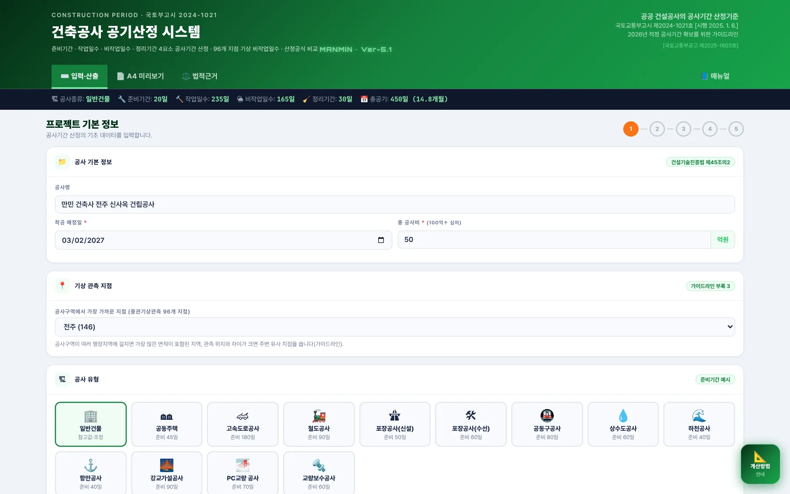
123456- 1작업 탭: 입력·산출 · A4 미리보기 · 법적근거 · 매뉴얼
- 2요약 스트립: 공사종류·준비·작업·비작업·정리·총공기가 입력할 때마다 갱신
- 3단계 표시: 5단계 — 지난 단계는 눌러서 돌아감
- 4공사 기본 정보: 공사명·착공 예정일·총 공사비
- 5기상 관측 지점: 비작업일수에 쓸 지점(96개)
- 6오른쪽 버튼: 「계산방법 안내」 창 열기
| 탭 | 하는 일 | 본문 |
|---|---|---|
| ⌨️ 입력·산출 | 5단계 입력 — ① 기본 정보 ② 준비기간·정리기간 ③ 작업일수 ④ 비작업일수 ⑤ 결과 | 3-1~3-11 |
| 📄 A4 미리보기 | A4 공기산정 근거서 · 인쇄/PDF · JPG 저장 | 3-12 |
| ⚖️ 법적근거 | 근거 체계 · 적정성 심의 · 프로그램이 쓰는 값의 출처 | 3-13 |
| 📘 매뉴얼 | 이 매뉴얼을 새 창으로 엽니다(인터넷 연결 필요) | 1-3 |
1-2. 작업 탭·근거 표시
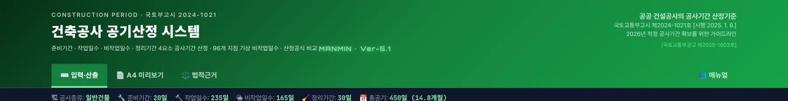
12345- 1입력·산출
- 2A4 미리보기
- 3법적근거
- 4📘 매뉴얼 — 이 매뉴얼을 새 창으로(탭 막대 오른쪽 끝)
- 5근거 고시·가이드라인 표시
헤더 오른쪽에 고시와 가이드라인 번호가 적혀 있습니다. 가이드라인은 해마다 새로 공고되므로, 새 판이 나오면 이 표시와 4장 내용을 함께 확인하십시오.
1-3. 설치·보관·매뉴얼
| 항목 | 내용 |
|---|---|
| 설치(선택) | 크롬·엣지 주소창의 설치 아이콘 또는 화면 아래 설치 안내를 누르면 앱으로 설치됩니다. 아이폰은 사파리 공유 버튼 → 「홈 화면에 추가」 |
| 오프라인 | 한 번 연 뒤에는 인터넷이 끊겨도 계산·출력이 됩니다. 매뉴얼은 인터넷에 연결되어 있을 때만 열립니다 |
| 입력값 보관 | 입력값은 저장되지 않습니다. 결과는 근거서(PDF·JPG)로 남기십시오 |
| 업데이트 | 새 버전이 올라오면 다음 접속 때 자동으로 바뀝니다. 화면이 예전 그대로면 새로 고침(Ctrl+F5) |
023분 따라하기
예제 A로 6단계를 따라 하면 공사기간 450일이 나옵니다. 계산 버튼은 없습니다. 값을 바꾸는 즉시 결과가 바뀝니다.
- 공사 정보·관측 지점공사명, 착공 예정일(예제 2027. 3. 2.), 총 공사비(50억원)를 넣고 「기상 관측 지점」에서 공사구역에 가장 가까운 지점(전주(146))을 고릅니다(3-1·3-2).
- 공사 유형·건물 규모공사 유형(일반건물)을 고르고 지상 5층 · 지하 1층 · 연면적 4,000㎡ · 건축물 유형(기타 건축물)을 넣습니다(3-3·3-4).
- 준비기간·정리기간「다음」을 누르면 준비기간 20일(일반건물 참고값)과 정리기간 30일이 들어갑니다. 현장 조건에 맞게 조정합니다(3-5).
- 작업일수 → 비작업일수 → 공사기간공종별 작업일수(합계 235일)를 확인·수정하고, 비작업일수 단계에서 기상조건(철근콘크리트공사 예시)을 확인합니다. 월별로 계산한 비작업일수 165일이 더해져 공사기간 450일이 됩니다(3-6~3-9).
- 산정공식과 비교결과 화면에서 부록 5 산정공식(기타 건축물)으로 구한 696일과의 차이(-35.3%)를 봅니다. 차이가 크면 작업일수와 기상조건 설정을 다시 검토합니다(3-10).
- 근거서 인쇄·저장「📄 A4 미리보기」에서 「인쇄 / PDF 저장」 또는 「JPG 저장」으로 공기산정 근거서를 남깁니다(3-12).
| 구분 | 예제 A | 값 |
|---|---|---|
| ① 준비기간 | 일반건물 · 공사비 10억원 이상 (MANMIN 참고값) | 20일 |
| ② 작업일수 | 공종별 합계 (MANMIN 참고값) | 235일 |
| ③ 비작업일수 | 전주(146) · 철근콘크리트공사 기상조건 · 14개월 계상 | 165일 |
| ④ 정리기간 | 준공 전 1개월 범위 | 30일 |
| 공사기간 | ① + ② + ③ + ④ | 450일 |
| 준공 예정일 | 착공 2027. 3. 2. + 공사기간 | 2028. 5. 25. |
03화면별 기능 상세
입력·산출 탭의 5단계 순서와 나머지 탭 순서로 설명합니다.
3-1. 공사 기본 정보 (1단계)
- 1공사명 — 근거서 표제
- 2착공 예정일 — 비작업일수를 셀 달이 여기서 정해짐
- 3총 공사비(억원) — 일반건물 준비기간 · 심의 대상 표시 · 산정공식에 사용
- 총 공사비 100억원 이상(시·군·구 발주는 50억원 이상)이면 결과 화면에 공사기간 적정성 심의 대상이 표시됩니다(4-10).
- 착공 예정일은 과거 날짜도 넣을 수 있습니다. 법정공휴일 자료가 없는 해(2026년 이전 · 2035년 이후)는 가장 가까운 해의 값을 씁니다.
3-2. 기상 관측 지점
- 1관측 지점 — 행정구역별로 묶은 96개 종관기상관측(ASOS) 지점
공사구역에서 가장 인접한 행정지역의 지점을 고릅니다. 여러 행정지역에 걸치면 가장 많은 면적이 포함된 지역, 관측 위치와 차이가 현저하면 주변 유사 지점을 씁니다(가이드라인). 같은 목록이 4단계에도 있어 거기서 바꿔도 됩니다.
3-3. 공사 유형
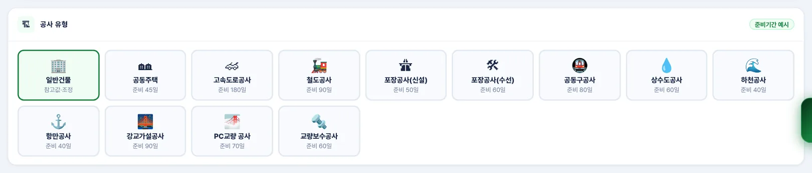
123- 1일반건물 — 가이드라인 예시 없음, MANMIN 참고값
- 2공동주택 — 준비 45일
- 3고속도로공사 — 준비 180일
카드 아래 작은 글씨가 준비기간입니다. 가이드라인 「건설공사 유형별 준비기간(예시)」 12종과 일반건물이 있습니다(4-3). 유형을 바꾸면 준비기간 조정값은 초기화됩니다.
3-4. 건물 규모
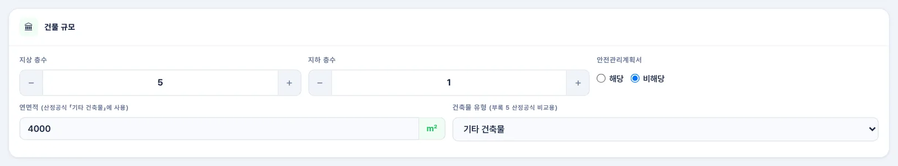
12345- 1지상 층수
- 2지하 층수
- 3안전관리계획서 — 해당이면 일반건물 준비기간 45일(참고값)
- 4연면적(㎡) — 산정공식 「기타 건축물」에 사용
- 5건축물 유형 — 산정공식 비교에 쓸 식(일반건물만)
층수는 공종별 작업일수(참고값)와 산정공식에 씁니다. 공동주택은 건축물 유형 선택이 없고 공동주택 식을 씁니다.
3-5. 준비기간·정리기간 (2단계)
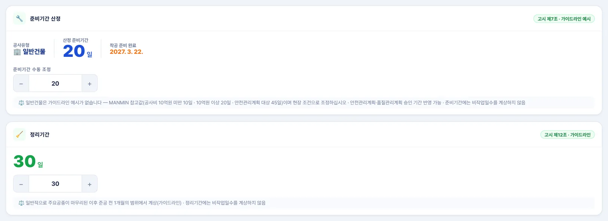
1234- 1준비기간 수동 조정
- 2근거 — 예시 출처 또는 「MANMIN 참고값」 표시
- 3정리기간 조정
- 4근거 — 준공 전 1개월 범위
- 조정한 값은 다른 입력을 바꿔도 유지되고 「조정됨」 표시가 붙습니다. 공사 유형이나 안전관리계획서 선택을 바꾸면 예시값으로 돌아갑니다.
- 준비기간·정리기간에는 비작업일수를 계상하지 않습니다(가이드라인). 아래 노란 칸은 용지보상·지장물 이설·문화재 시굴 같은 시공조건의 소요기간 예시입니다.
3-6. 공종별 작업일수 (3단계)
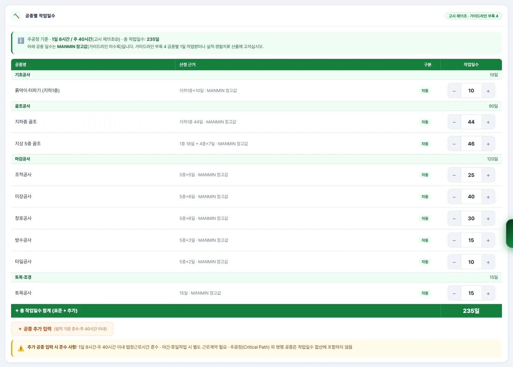
1234- 1MANMIN 참고값 안내
- 2공종 묶음과 소계
- 3일수 조정(− / +)
- 4총 작업일수
| 공종(예제 A) | 작업일수 |
|---|---|
| 흙막이·터파기 (지하1층) | 10일 |
| 지하층 골조 | 44일 |
| 지상 5층 골조 | 46일 |
| 조적공사 | 25일 |
| 미장공사 | 40일 |
| 창호공사 | 30일 |
| 방수공사 | 15일 |
| 타일공사 | 10일 |
| 토목공사 | 15일 |
| 합계 | 235일 |
- 층수로 채워지는 일수는 MANMIN 참고값이며 가이드라인에 없는 값입니다. 가이드라인 부록 4의 공종별 1일 작업량이나 실적·경험치로 산출한 값으로 고치십시오(4-7).
- 「＋ 공종 추가 입력」으로 주공정에 드는 공종을 더할 수 있습니다. 공동주택·일반건물 외 유형은 「주요 공종 90일」 한 줄로 시작합니다.
3-7. 비작업일수 — 기상조건 (4단계)
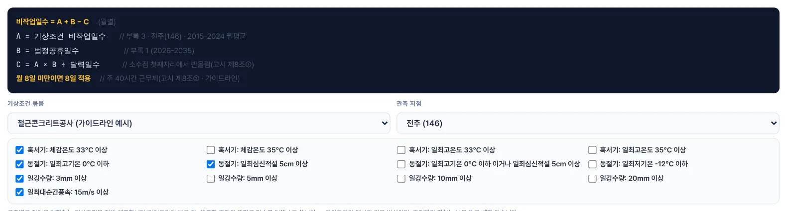
1234- 1산정식 A + B − C · 8일 하한
- 2기상조건 묶음 — 철근콘크리트공사(가이드라인 예시) 또는 직접 선택
- 3관측 지점
- 4기상조건 13종 체크
공종별로 작업을 제한하는 기상조건을 체크합니다. 체크한 조건의 월평균 일수를 더해 A로 씁니다 — 가이드라인 예시와 같은 방식이며, 조건끼리 겹치는 날은 따로 빼지 않습니다. 기본 묶음은 가이드라인의 철근콘크리트공사 예시(동절기 최고기온 0℃ 이하 · 일강수량 3mm 이상 · 최대순간풍속 15m/s 이상 · 신적설 5cm 이상 · 체감온도 33℃ 이상)입니다.
3-8. 비작업일수 — 월별 산정표
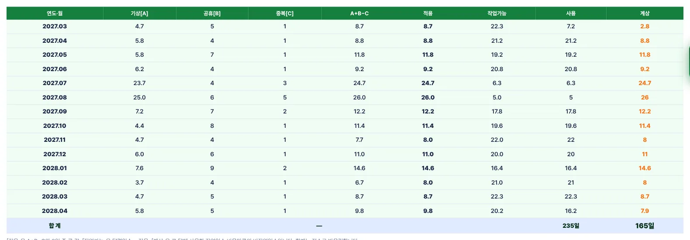
1234- 1첫 달 — 작업 착수일(착공 + 준비기간) 이후 날짜만 사용
- 27월 — 체감온도 33℃ 이상 일수가 커서 비작업일수가 큼
- 311월 — A+B−C가 8일보다 작아 8일 적용
- 4합계 — 사용 일수 = 작업일수, 계상 합계 = 비작업일수
| 연도·월 | 기상 A | 공휴 B | 중복 C | A+B−C | 적용 | 작업가능 | 사용 | 계상 |
|---|---|---|---|---|---|---|---|---|
| 2027.03 | 4.7 | 5 | 1 | 8.7 | 8.7 | 22.3 | 7.2 | 2.8 |
| 2027.04 | 5.8 | 4 | 1 | 8.8 | 8.8 | 21.2 | 21.2 | 8.8 |
| 2027.05 | 5.8 | 7 | 1 | 11.8 | 11.8 | 19.2 | 19.2 | 11.8 |
| 2027.06 | 6.2 | 4 | 1 | 9.2 | 9.2 | 20.8 | 20.8 | 9.2 |
| 2027.07 | 23.7 | 4 | 3 | 24.7 | 24.7 | 6.3 | 6.3 | 24.7 |
| 2027.08 | 25.0 | 6 | 5 | 26.0 | 26.0 | 5.0 | 5 | 26 |
| 2027.09 | 7.2 | 7 | 2 | 12.2 | 12.2 | 17.8 | 17.8 | 12.2 |
| 2027.10 | 4.4 | 8 | 1 | 11.4 | 11.4 | 19.6 | 19.6 | 11.4 |
| 2027.11 | 4.7 | 4 | 1 | 7.7 | 8.0 | 22.0 | 22 | 8 |
| 2027.12 | 6.0 | 6 | 1 | 11.0 | 11.0 | 20.0 | 20 | 11 |
| 2028.01 | 7.6 | 9 | 2 | 14.6 | 14.6 | 16.4 | 16.4 | 14.6 |
| 2028.02 | 3.7 | 4 | 1 | 6.7 | 8.0 | 21.0 | 21 | 8 |
| 2028.03 | 4.7 | 5 | 1 | 8.7 | 8.7 | 22.3 | 22.3 | 8.7 |
| 2028.04 | 5.8 | 5 | 1 | 9.8 | 9.8 | 20.2 | 16.2 | 7.9 |
| 합계 | 235 | 165 |
- 적용은 A+B−C와 8일 중 큰 값, 작업가능은 달력일수 − 적용, 사용은 그 달에 채운 작업일수, 계상은 적용 × 사용 ÷ 작업가능입니다. 작업일수를 다 채울 때까지 다음 달로 넘어갑니다.
- 계상 합계는 소수 한 자리로 더한 뒤 정수로 반올림합니다.
3-9. 산정 결과 (5단계)
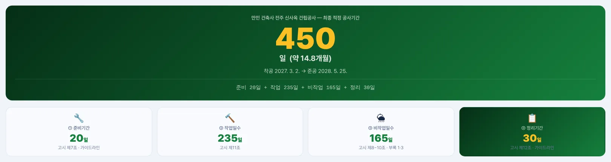
123456- 1총 공사기간
- 2착공 → 준공 예정일
- 3① 준비기간
- 4② 작업일수
- 5③ 비작업일수
- 6④ 정리기간
3-10. 산정공식과 비교
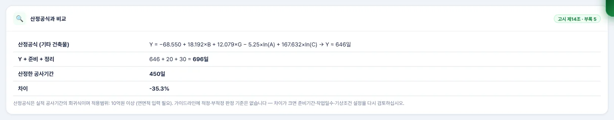
1234- 1산정공식(기타 건축물)과 Y
- 2Y + 준비 + 정리
- 3산정한 공사기간
- 4차이(%)
부록 5의 시설물별 공사기간 산정공식으로 구한 값(Y)에 준비기간과 정리기간을 더해 비교합니다. 가이드라인에 적정·부적정 판정 기준은 없으므로 차이만 표시합니다. 적용범위 밖이면 비교하지 않습니다. 예제 A는 -35.3%로 산정 공사기간이 짧습니다 — 작업일수가 참고값이기 때문이며, 실제 산정에서는 공종 일수를 다시 산출해야 합니다(4-9).
3-11. 산정근거 명세서
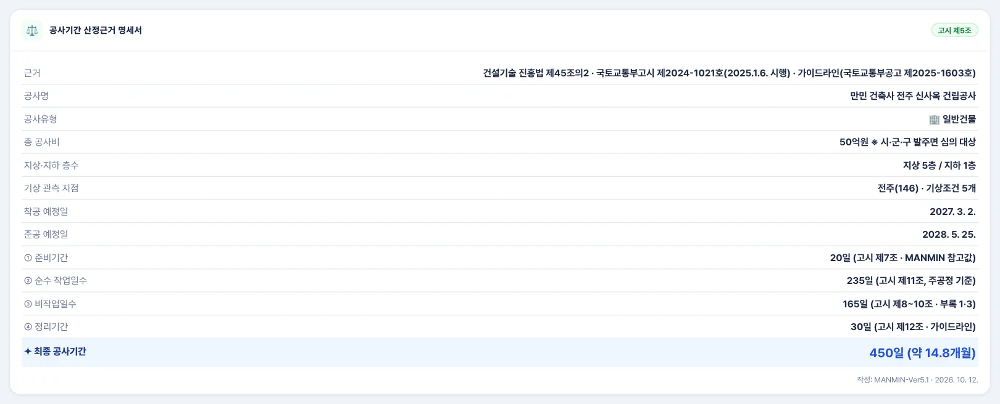
1234- 1근거 — 법 · 고시 · 가이드라인
- 2기상 관측 지점과 조건 수
- 3최종 공사기간
- 4「A4 미리보기」로 이동
3-12. A4 근거서·출력
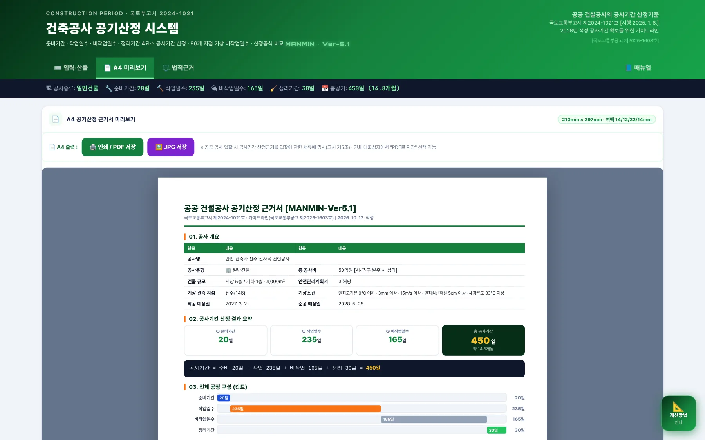
123- 1「인쇄 / PDF 저장」 — 인쇄 창 대상을 「PDF로 저장」으로
- 2「JPG 저장」 — A4 쪽 단위 그림
- 3A4 공기산정 근거서
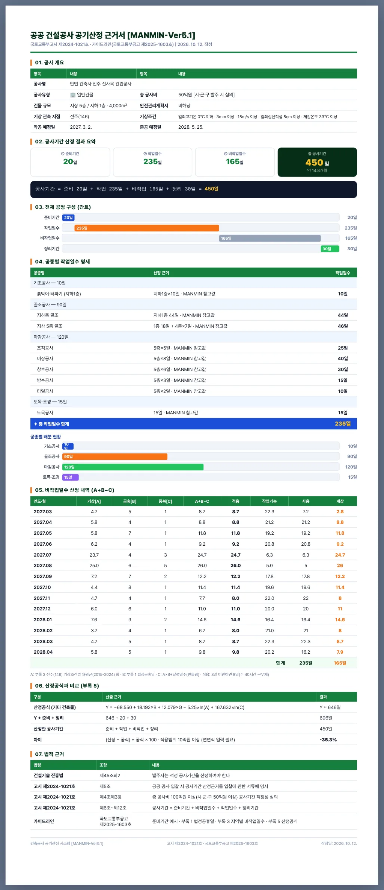
1234567- 101 공사 개요 — 지점·기상조건 포함
- 202 산정 결과 요약
- 303 전체 공정 구성(간트)
- 404 공종별 작업일수 명세
- 505 비작업일수 산정 내역(A+B−C)
- 606 산정공식과 비교(부록 5)
- 707 법적 근거
근거서는 고시 제5조의 「공사기간 산정근거」를 입찰에 관한 서류에 붙일 때 쓰도록 만든 양식입니다. 월별 비작업일수 표가 길면 여러 쪽으로 이어집니다.
미리보기는 화면 폭에 맞춰 줄어들 뿐 인쇄 결과는 같습니다. 인쇄 창에서 「배경 그래픽」을 켜면 색이 함께 인쇄됩니다.
3-13. 법적근거 탭
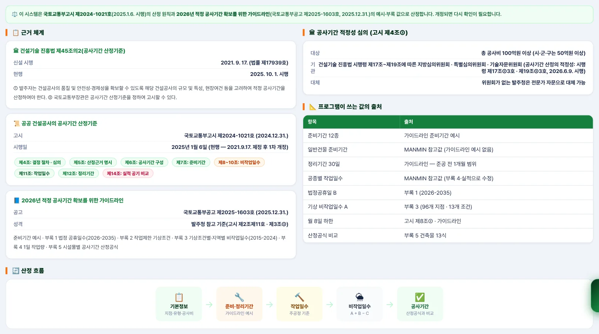
12345- 1건설기술 진흥법 제45조의2
- 2고시 제2024-1021호 — 조문 배지
- 32026년 가이드라인
- 4공사기간 적정성 심의(고시 제4조③)
- 5프로그램이 쓰는 값의 출처
3-14. 계산방법 안내 창
오른쪽 「계산방법 안내」 버튼을 누르면 아래에서 창이 올라옵니다. 탭 7개로 이용방법, 전체 흐름, 준비기간, 작업일수, 비작업일수, 산정공식 비교, 기상조건을 볼 수 있습니다.
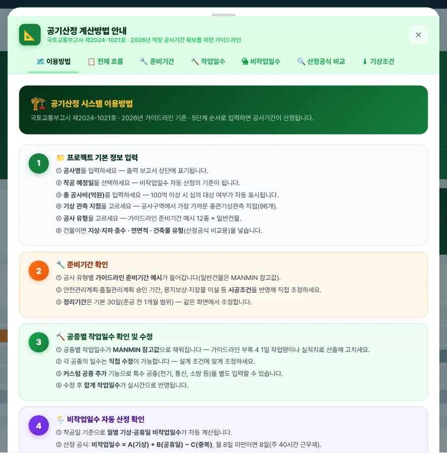
1234567- 1이용방법
- 2전체 흐름
- 3준비기간
- 4작업일수
- 5비작업일수
- 6산정공식 비교
- 7기상조건
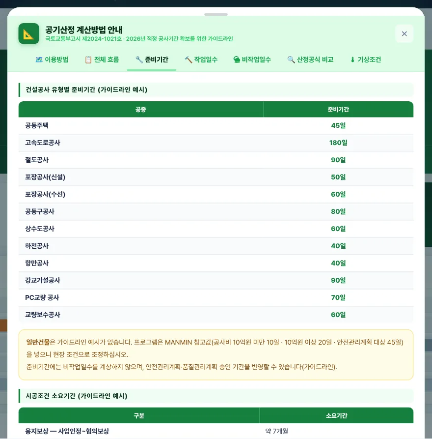
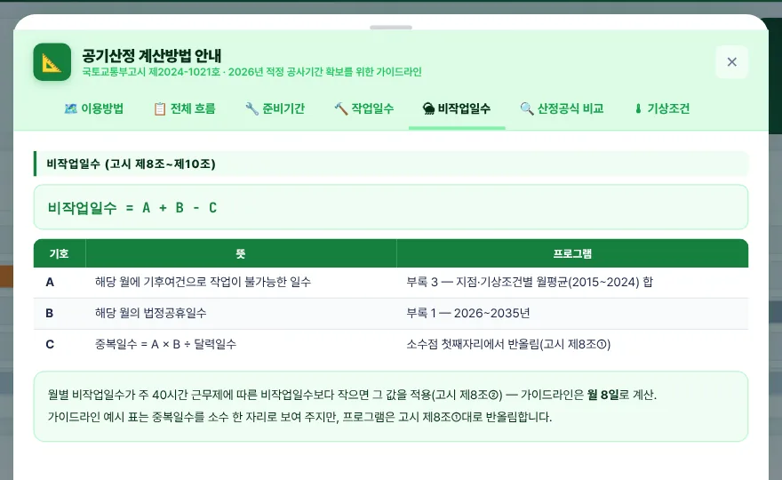
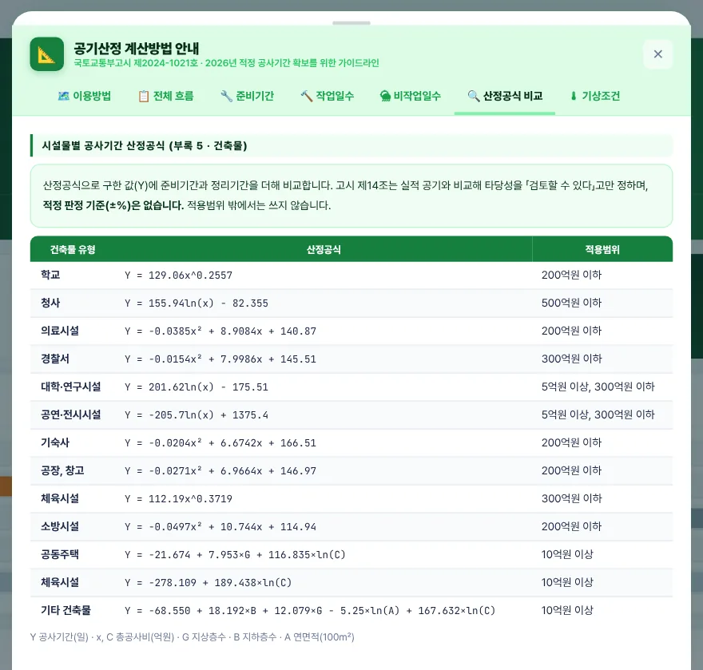
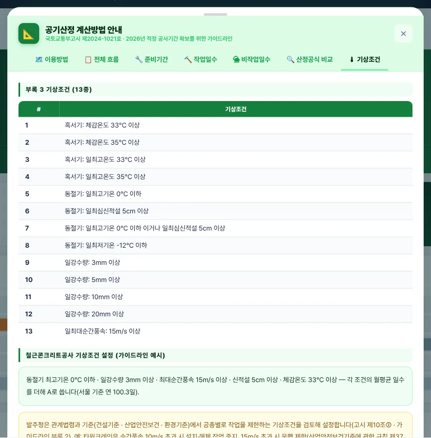
3-15. 모바일
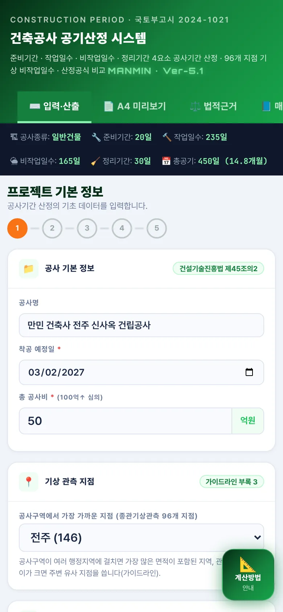
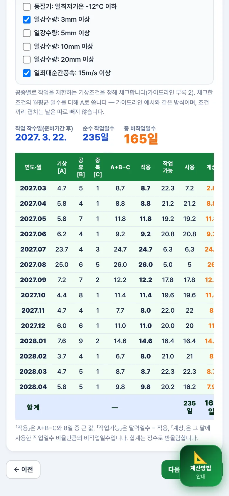
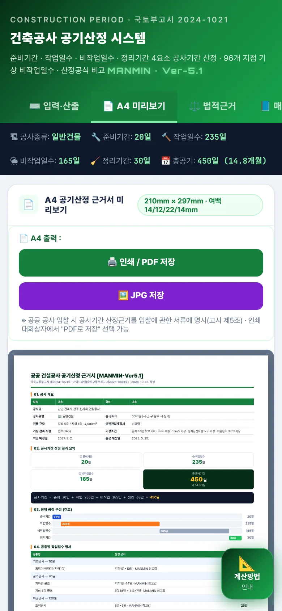
- 휴대폰에서는 카드가 한 줄로 쌓입니다. 탭 막대는 좌우로 밀 수 있으며, 「📘 매뉴얼」은 오른쪽 끝에 있습니다.
- 월별 산정표는 좌우로 밀어서 봅니다. 근거서는 화면 폭에 맞춰 축소되어 보이고, 저장한 PDF·JPG는 A4 크기 그대로입니다.
04기술기준 해설
법률·고시 조문은 LawMCP 원문, 가이드라인은 국토교통부 공고 원문(2026-10-12 확인)을 옮긴 것입니다.
4-1. 근거 체계
| 근거 | 내용 | 시행·공고 |
|---|---|---|
| 건설기술 진흥법 제45조의2① | 발주자는 건설공사의 품질 및 안전성·경제성을 확보할 수 있도록 해당 건설공사의 규모 및 특성, 현장여건 등을 고려하여 적정 공사기간을 산정하여야 한다. 다만, 불가항력 등 정당한 사유가 발생한 경우에는 이를 고려하여 적정 공사기간 조정을 검토하여야 한다 | 2021.9.17. 신설 시행(법률 제17939호) |
| 같은 조 ② | 국토교통부장관은 공사기간 산정기준을 정하여 고시할 수 있다 | — |
| 고시 제2024-1021호 | 「공공 건설공사의 공사기간 산정기준」 — 산정 원칙과 절차. 준비기간·정리기간 일수는 정하지 않음 | 2025.1.6. 시행 |
| 고시 제3조③ | 발주청은 공사기간 산정 시에 가이드라인을 참고하여 공사기간을 부당하게 삭감하거나 과잉 계상하지 않도록 한다 | — |
| 가이드라인 | 「2026년 적정 공사기간 확보를 위한 가이드라인」 — 준비기간 예시, 부록 1 법정공휴일수(2026-2035), 부록 2 작업제한 기상조건, 부록 3 기상조건별·지역별 비작업일수(2015-2024), 부록 4 1일 작업량, 부록 5 산정공식 | 국토교통부공고 제2025-1603호(2025.12.31.) |
4-2. 공사기간의 구성
| 용어 | 정의 | 근거 |
|---|---|---|
| 준비기간 | 설계도서 검토, 하도급업체의 선정, 측량, 현장사무소·세륜시설·가설건물의 설치, 주요 건설자재·장비 및 공장제작 조달 등 공사의 착공 준비에 필요한 기간 | 고시 제2조제6호 |
| 정리기간 | 준공검사 준비, 시설물 인수 등을 위한 행정절차 및 청소 등 현장 정리에 소요되는 기간 | 고시 제2조제8호 |
| 법정공휴일 | 「관공서의 공휴일에 관한 규정」 제2조 및 제3조에 따른 공휴일 및 대체공휴일 | 고시 제2조제7호 |
| 보정 | 공사의 규모·성격, 지역여건 등에 따라 공사일수를 가감할 수 있음 | 고시 제13조 |
4-3. 준비기간
고시 제7조 — 발주청은 해당 공사의 내용에 적합한 준비기간을 산정하여야 한다. 가이드라인은 공사 유형별 준비기간 예시를 참고하여 시설물별 특성을 고려한 적정 준비기간을 반영하도록 하고, 안전관리계획·품질관리계획 승인 등에 필요한 기간을 반영하여 계상할 수 있다고 합니다.
| 공종 (가이드라인 예시) | 준비기간 |
|---|---|
| 공동주택 | 45일 |
| 고속도로공사 | 180일 |
| 철도공사 | 90일 |
| 포장공사(신설) | 50일 |
| 포장공사(수선) | 60일 |
| 공동구공사 | 80일 |
| 상수도공사 | 60일 |
| 하천공사 | 40일 |
| 항만공사 | 40일 |
| 강교가설공사 | 90일 |
| PC교량 공사 | 70일 |
| 교량보수공사 | 60일 |
4-4. 비작업일수
| 근거 | 내용 |
|---|---|
| 고시 제8조① | 비작업일수는 법정공휴일수와 기상조건으로 인한 비작업일수의 합계에서 중복일수를 제외하여 산출한다. 이 경우 중복일수 산정은 소수점 첫째자리에서 반올림한다 |
| 고시 제8조② | 주공정 및 주공정에 영향을 미치는 공종에 대하여 검토하며, 월별 비작업일수가 주 40시간 근무제에 따른 비작업일수보다 작을 경우에는 주 40시간 근무제에 따른 비작업일수를 적용한다 |
| 가이드라인 | 주 40시간 근무제에 따른 비작업일수는 월 8일로 계산 |
| 고시 제9조 | 법정공휴일 수는 해당 공사의 착수 예정일 기준으로 산출하고 계약의 착수일 기준으로 재산출할 수 있다 |
| 고시 제10조 | 주공정에 영향을 미치는 기상조건을 반영하여 산출한다. 기상정보는 최근 5년 또는 10년 동안의 통계를 활용할 수 있다(①). 관계법령과 기준에서 공종별로 작업을 제한하고 있는 기상조건을 반영한다(②) |
가이드라인의 월별 예시 표는 중복일수를 소수 한 자리로 보여 주지만, 프로그램은 고시 제8조①대로 정수로 반올림합니다. 그래서 같은 달이라도 예시 표와 0.1~0.5일 다를 수 있습니다.
4-5. 법정공휴일 (부록 1)
| 연도 | 1월 | 2월 | 3월 | 4월 | 5월 | 6월 | 7월 | 8월 | 9월 | 10월 | 11월 | 12월 | 소계 |
|---|---|---|---|---|---|---|---|---|---|---|---|---|---|
| 2026 | 5 | 7 | 6 | 4 | 7 | 5 | 4 | 7 | 7 | 7 | 5 | 5 | 69 |
| 2027 | 6 | 7 | 5 | 4 | 7 | 4 | 4 | 6 | 7 | 8 | 4 | 6 | 68 |
| 2028 | 9 | 4 | 5 | 5 | 6 | 5 | 5 | 5 | 4 | 10 | 4 | 6 | 68 |
| 2029 | 5 | 7 | 5 | 5 | 7 | 5 | 5 | 5 | 8 | 6 | 4 | 6 | 68 |
| 2030 | 5 | 7 | 6 | 4 | 6 | 6 | 4 | 5 | 8 | 6 | 4 | 6 | 67 |
| 2031 | 8 | 4 | 7 | 4 | 6 | 6 | 4 | 6 | 5 | 8 | 5 | 5 | 68 |
| 2032 | 5 | 8 | 5 | 4 | 7 | 4 | 4 | 6 | 7 | 8 | 4 | 6 | 68 |
| 2033 | 7 | 6 | 5 | 4 | 7 | 5 | 5 | 5 | 7 | 7 | 4 | 5 | 67 |
| 2034 | 5 | 7 | 5 | 5 | 6 | 5 | 5 | 5 | 7 | 7 | 4 | 6 | 67 |
| 2035 | 5 | 7 | 5 | 5 | 7 | 5 | 5 | 5 | 8 | 6 | 4 | 6 | 68 |
관공서의 공휴일과 대체공휴일을 적용한 값입니다. 임기만료 선거일과 정부가 수시 지정하는 날은 불규칙하므로 제외되어 있습니다(가이드라인).
4-6. 기상조건별 비작업일수 (부록 3)
최근 10년(2015~2024) 기상관측 데이터로 분석한 지점별 월평균 비작업일수입니다. 96개 종관기상관측 지점 × 13개 기상조건이 프로그램에 들어 있습니다.
| # | 기상조건 |
|---|---|
| 1 | 혹서기: 체감온도 33°C 이상 |
| 2 | 혹서기: 체감온도 35°C 이상 |
| 3 | 혹서기: 일최고온도 33°C 이상 |
| 4 | 혹서기: 일최고온도 35°C 이상 |
| 5 | 동절기: 일최고기온 0°C 이하 |
| 6 | 동절기: 일최심신적설 5㎝ 이상 |
| 7 | 동절기: 일최고기온 0°C 이하 이거나 일최심신적설 5㎝ 이상 |
| 8 | 동절기: 일최저기온 -12°C 이하 |
| 9 | 일강수량: 3㎜ 이상 |
| 10 | 일강수량: 5㎜ 이상 |
| 11 | 일강수량: 10㎜ 이상 |
| 12 | 일강수량: 20㎜ 이상 |
| 13 | 일최대순간풍속: 15m/s 이상 |
가이드라인 예시 재현 — 서울(108), 철근콘크리트공사
| 조건 | 1월 | 2월 | 3월 | 4월 | 5월 | 6월 | 7월 | 8월 | 9월 | 10월 | 11월 | 12월 |
|---|---|---|---|---|---|---|---|---|---|---|---|---|
| 동절기: 일최고기온 0°C 이하 | 7.1 | 3.1 | 0 | 0 | 0 | 0 | 0 | 0 | 0 | 0 | 0.2 | 6 |
| 일강수량: 3㎜ 이상 | 1.5 | 2.4 | 2.5 | 4.8 | 5.1 | 6.2 | 9.2 | 8.9 | 4.8 | 3.7 | 4.5 | 2.2 |
| 일최대순간풍속: 15m/s 이상 | 0.4 | 0.2 | 1 | 1 | 1 | 0.3 | 0.6 | 0.7 | 0.6 | 0.2 | 0.5 | 0.5 |
| 동절기: 일최심신적설 5㎝ 이상 | 0.4 | 0.3 | 0 | 0 | 0 | 0 | 0 | 0 | 0 | 0 | 0.3 | 0.3 |
| 혹서기: 체감온도 33°C 이상 | 0 | 0 | 0 | 0 | 0 | 0.1 | 8 | 10.9 | 0.8 | 0 | 0 | 0 |
| 계(A) | 9.4 | 6 | 3.5 | 5.8 | 6.1 | 6.6 | 17.8 | 20.5 | 6.2 | 3.9 | 5.5 | 9 |
계(A) 행은 가이드라인 「기상조건에 따른 월간 비작업일수 예시(철근콘크리트공사)」의 서울 기준 값(연 100.3일)과 같습니다.
예제 A — 전주(146), 철근콘크리트공사
| 조건 | 1월 | 2월 | 3월 | 4월 | 5월 | 6월 | 7월 | 8월 | 9월 | 10월 | 11월 | 12월 |
|---|---|---|---|---|---|---|---|---|---|---|---|---|
| 동절기: 일최고기온 0°C 이하 | 3.1 | 0.7 | 0 | 0 | 0 | 0 | 0 | 0 | 0 | 0 | 0 | 2.3 |
| 일강수량: 3㎜ 이상 | 3.2 | 2.9 | 4.1 | 5.2 | 5.3 | 5.6 | 10.9 | 8.2 | 5.1 | 4.3 | 4.3 | 3.2 |
| 일최대순간풍속: 15m/s 이상 | 0.6 | 0 | 0.6 | 0.6 | 0.5 | 0 | 0.4 | 0.2 | 0.5 | 0.1 | 0.3 | 0.1 |
| 동절기: 일최심신적설 5㎝ 이상 | 0.7 | 0.1 | 0 | 0 | 0 | 0 | 0 | 0 | 0 | 0 | 0.1 | 0.4 |
| 혹서기: 체감온도 33°C 이상 | 0 | 0 | 0 | 0 | 0 | 0.6 | 12.4 | 16.6 | 1.6 | 0 | 0 | 0 |
| 계(A) | 7.6 | 3.7 | 4.7 | 5.8 | 5.8 | 6.2 | 23.7 | 25 | 7.2 | 4.4 | 4.7 | 6 |
4-7. 작업일수
| 근거 | 내용 |
|---|---|
| 고시 제11조① | 작업일수는 해당 공사의 공종별 수량을 시공하는데 필요한 총 작업일수를 말한다 |
| 고시 제11조② | 주공정을 구성하는 작업량 기준으로 산출하거나 과거의 실적자료·경험치, 동종시설 사례 등을 활용하여 산출(실적자료는 근로기준법에 따른 근로시간을 기준으로 보정)하며, 현장여건 및 공사규모, 지질조건, 기상·기후조건 등에 따라 조정하여 적용한다 |
| 고시 제11조③ | 건설현장 근로자의 작업조건이 법정 근로시간(1일 8시간, 주 40시간)을 준수하는 것을 원칙으로 한다 |
| 가이드라인 | 부록 4의 공종별 1일 작업량을 활용하거나 발주청이 보유한 과거의 경험치를 활용할 수 있다. 부록 4는 대표적이고 일반화된 공종 및 공법 기준 |
4-8. 정리기간
고시 제12조 — 정리기간은 공사 규모 및 시설물 특성 등을 고려하여 산출한다. 가이드라인 — 정리기간은 공정상 여유기간(buffer)과는 다르며, 일반적으로 주요공종이 마무리된 이후 준공 전 1개월의 범위에서 계상할 수 있다. 정리기간에는 비작업일수를 계상하지 않는다. 프로그램 기본값은 30일입니다.
4-9. 산정공식 (부록 5)
고시 제14조 — 발주청은 산정한 공사기간을 실적 공기와 비교하여 타당성을 검토할 수 있다. 가이드라인은 회귀분석 모델인 시설물별 공사기간 산정공식(부록 5)을 활용할 수 있게 하며, 산정된 값(Y)에 준비기간 및 정리기간을 합산하고 적용범위 내에서만 활용하도록 합니다.
| 건축물 유형 | 산정공식 | 적용범위 |
|---|---|---|
| 학교 | Y = 129.06x0.2557 | 200억원 이하 |
| 청사 | Y = 155.94ln(x) − 82.355 | 500억원 이하 |
| 의료시설 | Y = −0.0385x² + 8.9084x + 140.87 | 200억원 이하 |
| 경찰서 | Y = −0.0154x² + 7.9986x + 145.51 | 300억원 이하 |
| 대학·연구시설 | Y = 201.62ln(x) − 175.51 | 5억원 이상, 300억원 이하 |
| 공연·전시시설 | Y = −205.7ln(x) + 1375.4 | 5억원 이상, 300억원 이하 |
| 기숙사 | Y = −0.0204x² + 6.6742x + 166.51 | 200억원 이하 |
| 공장, 창고 | Y = −0.0271x² + 6.9664x + 146.97 | 200억원 이하 |
| 체육시설 | Y = 112.19x0.3719 | 300억원 이하 |
| 소방시설 | Y = −0.0497x² + 10.744x + 114.94 | 200억원 이하 |
| 공동주택 | Y = −21.674 + 7.953×G + 116.835×ln(C) | 10억원 이상 |
| 체육시설 | Y = −278.109 + 189.438×ln(C) | 10억원 이상 |
| 기타 건축물 | Y = −68.550 + 18.192×B + 12.079×G − 5.25×ln(A) + 167.632×ln(C) | 10억원 이상 |
Y 공사기간(일) · x, C 총공사비(억원) · G 지상층수 · B 지하층수 · A 연면적(100㎡). 프로그램은 차이(%)만 보여 주며, 가이드라인에 판정 기준(±%)은 없습니다.
4-10. 결정 절차·심의·명시
| 근거 | 내용 |
|---|---|
| 고시 제4조① | 발주청은 설계자로 하여금 이 고시에 따라 공사기간을 산정하고 그 산정근거를 명시하도록 하여야 하며, 설계 성과품의 일부로 제출하도록 하여야 한다 |
| 고시 제4조② | 발주청은 입찰공고를 하기 전에 공사기간의 적정성(준비기간 · 비작업일수 · 작업일수 · 정리기간)을 검토하여야 한다 |
| 고시 제4조③ | 총 공사비 100억원 이상(시·군·구는 50억원 이상) 건설공사는 건설기술 진흥법 시행령 제17조부터 제19조까지에 따른 지방심의위원회, 특별심의위원회 또는 기술자문위원회의 공사기간 적정성 심의를 받아야 한다. 위원회가 설치되어 있지 아니한 발주청은 전문가 자문으로 대체할 수 있다 |
| 건설기술 진흥법 시행령 제17조②3호 · 제19조⑤3호 | 지방심의위원회와 기술자문위원회의 심의 사항 — 총공사비 100억원(시·군·자치구의 경우에는 50억원) 이상인 건설공사의 공사기간 산정의 적정성에 관한 사항(2026.6.9. 시행) |
| 고시 제5조① | 발주청은 공공 공사를 입찰할 때에는 공사기간 산정근거를 입찰에 관한 서류에 명시하여야 한다 |
| 고시 제15조 | 행정절차, 인·허가, 용지 보상, 문화재 시발굴 등 착공 및 진행에 차질이 예상되는 경우 그 진행현황 정보를 입찰참가자에게 제공하여야 한다 |
4-11. 프로그램의 계산 순서
4-12. 프로그램이 다루지 않는 것
| 항목 | 내용 | 프로그램 |
|---|---|---|
| 1일 작업량 기반 산출 | 부록 4 공종별 1일 작업량 × 수량 계산 | 참고값을 직접 수정 |
| 미세먼지 보정 | 가이드라인 기상조건 예시의 미세먼지(PM2.5) 나쁨등급 보정 | 필요하면 비작업일수에 반영해 작업일수·준비기간 조정 |
| 공사여건 보정 | 도심지·소규모 등 고시 제13조의 가감 | 공종 추가 또는 일수 조정 |
| 시공조건 기간 | 용지보상·지장물 이설·문화재 조사 기간 | 준비기간 조정 |
| 토목 시설물 산정공식 | 부록 5-2(도로·철도 등) | 비교하지 않음 |
| 일 단위 비작업일수 | 가이드라인은 월 또는 일 단위 산정을 허용 | 월 단위만 |
4-13. 적용 시점
| 기준 | 확인한 판 |
|---|---|
| 건설기술 진흥법 | 2025.10.1. 시행 — 제45조의2(2021.9.17. 신설) |
| 공공 건설공사의 공사기간 산정기준 | 국토교통부고시 제2024-1021호 — 2025.1.6. 시행(현행, 2021.9.17. 제정 후 1차 개정). 재검토기한: 2025.1.1. 기준 매 3년(고시 제20조) |
| 건설기술 진흥법 시행령 | 2026.6.9. 시행 — 제17조·제19조 |
| 적정 공사기간 확보를 위한 가이드라인 | 2026년판 — 국토교통부공고 제2025-1603호(2025.12.31.) |
| 부록 3 기상 통계 | 2015~2024년(최근 10년) 월평균 |
| 부록 1 법정공휴일 | 2026~2035년 |
05실무 작업 방법
설계 단계에서 공사기간을 산정하고 입찰 서류에 산정근거를 붙일 때의 순서입니다.
5-1. 단계별 절차
| 단계 | 할 일 | 본문 |
|---|---|---|
| 1. 기본 자료 | 총 공사비, 층수·연면적, 착공 예정일, 공사구역의 관측 지점 | 3-1~3-4 |
| 2. 준비·정리기간 | 유형별 예시에 안전·품질관리계획 승인 기간과 시공조건(용지보상·지장물·문화재) 반영 | 3-5 · 4-3 |
| 3. 작업일수 | 주공정 공종의 수량 ÷ 1일 작업량(부록 4) + 간접작업일수, 법정 근로시간 준수 | 3-6 · 4-7 |
| 4. 기상조건 | 관계법령·기준에서 공종별로 작업을 제한하는 조건을 정해 체크 | 3-7 · 4-6 |
| 5. 비교·검토 | 산정공식(부록 5) 또는 최근 5년 동종공사 실적 공기와 비교 | 3-10 · 4-9 |
| 6. 출력·제출 | 근거서 PDF를 설계 성과품과 입찰 서류에 첨부, 100억원 이상이면 적정성 심의 | 3-12 · 4-10 |
5-2. 제출 전 확인
| 항목 | 확인 내용 |
|---|---|
| 관측 지점 | 공사구역에서 가장 가까운 지점인지, 관측 위치와 차이가 크지 않은지 |
| 기상조건 | 주공정 공종의 작업제한 조건과 체크가 맞는지 |
| 착공 예정일 | 입찰 일정과 맞는지 — 바뀌면 비작업일수가 달라짐 |
| 작업일수 | 참고값을 설계 수량 기반 값으로 바꿨는지 |
| 준비·정리기간 | 예시값의 근거와 조정 사유를 적었는지 |
| 산정공식 비교 | 적용범위 안인지, 차이가 크면 그 이유를 설명할 수 있는지 |
| 심의 | 총 공사비 100억원(시·군·구 50억원) 이상이면 적정성 심의를 받는지 |
5-3. 예제 B — 공동주택
만민 공동주택 신축공사 · 서울(108) · 공사비 300억원 · 지상 15층/지하 2층 · 연면적 25,000㎡ · 착공 2027. 4. 1.
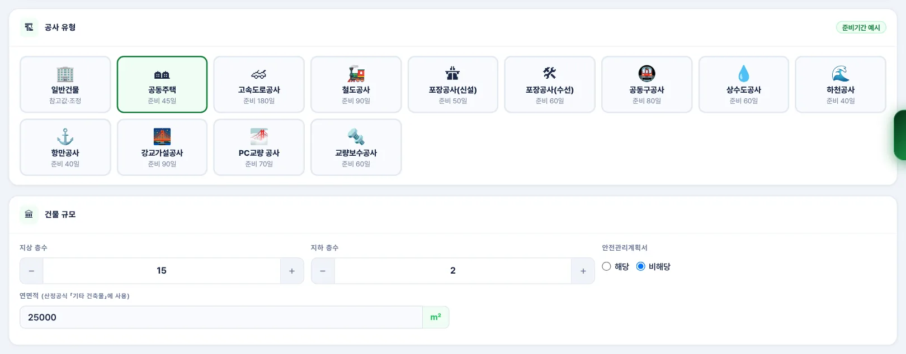
1234- 1공동주택 — 준비 45일(가이드라인 예시)
- 2지상 15층
- 3지하 2층
- 4연면적
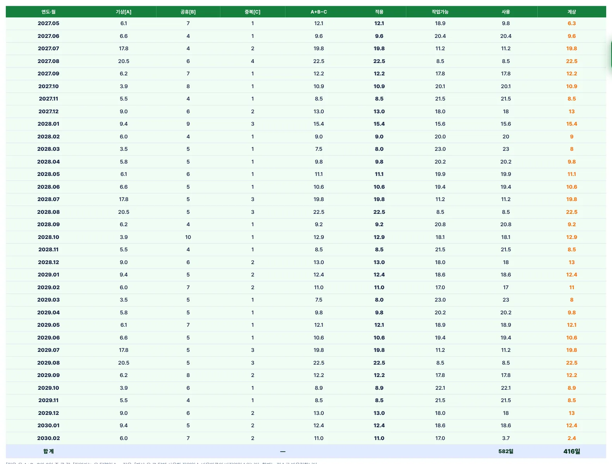
12- 17월 — 혹서기
- 2합계
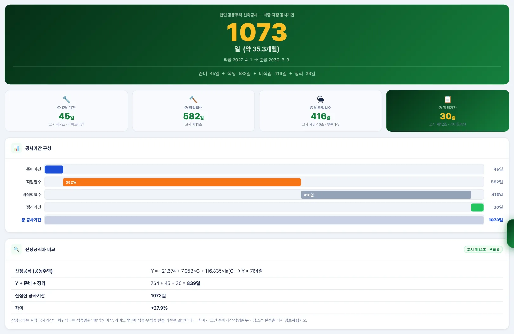
123- 1총 공사기간
- 2공동주택 산정공식
- 3차이
| 구분 | 예제 B | 값 |
|---|---|---|
| ① 준비기간 | 공동주택 (가이드라인 예시) | 45일 |
| ② 작업일수 | 공종별 합계 (MANMIN 참고값) | 582일 |
| ③ 비작업일수 | 서울(108) · 철근콘크리트공사 기상조건 · 34개월 | 416일 |
| ④ 정리기간 | 준공 전 1개월 범위 | 30일 |
| 공사기간 | ① + ② + ③ + ④ | 1073일 |
| 산정공식(공동주택) | Y = −21.674 + 7.953×15 + 116.835×ln(300) ≈ 764일 → + 준비 + 정리 = 839일 | 차이 +27.9% |
| 준공 예정일 | 착공 2027. 4. 1. + 공사기간 | 2030. 3. 9. |
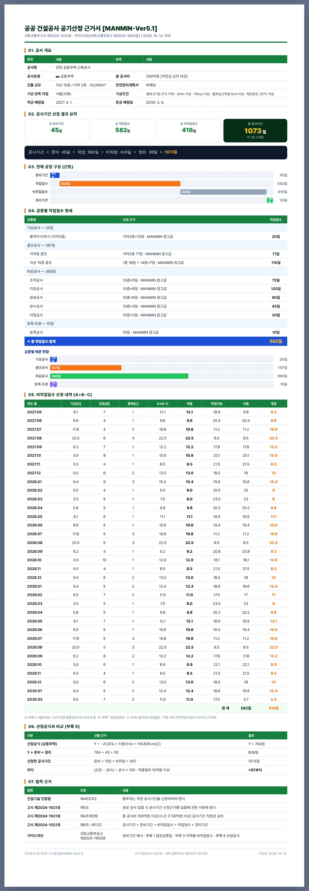
예제 B는 산정 공사기간이 산정공식보다 27.9% 깁니다. 층당 마감 공종 일수(참고값)가 고층에서 크게 늘어나기 때문입니다. 두 예제 모두 참고값 공종표의 한계를 보여 주며, 실무에서는 공종별 수량과 1일 작업량으로 다시 산출해야 합니다.
06문제 해결·FAQ
| 증상·질문 | 답 |
|---|---|
| 비작업일수가 작업일수보다 큽니다 | 체감온도 33℃ 이상 같은 혹서기 조건이 있는 지점(전주·대구 등)은 7·8월에 작업가능일이 5~6일밖에 안 되어 그 달을 지나는 동안 비작업일수가 크게 늘어납니다. 공종에 맞지 않는 조건이 체크되어 있지 않은지 보십시오. |
| 착공일만 바꿨는데 공사기간이 바뀝니다 | 지나가는 달이 달라지면 기상·공휴일 비작업일수가 달라집니다. 정상입니다. |
| 예전 버전과 비작업일수가 다릅니다 | v5.1.0부터 가이드라인 부록 3(96개 지점·2015~2024)과 부록 1(2026~2035)로 바꿨습니다. 예전 내장값에는 2026·2027년 겨울 작업가능일이 1~2일로 잘못 들어 있었습니다. |
| 기상조건을 모두 끄면 어떻게 됩니까 | A가 0이 되어 공휴일만 계산되고, 대부분의 달은 하한 8일이 적용됩니다. |
| 조건이 겹치는 날을 빼야 하지 않습니까 | 가이드라인 예시는 조건별 월평균 일수를 더해 A로 씁니다. 프로그램도 같은 방식입니다. 같은 날 여러 조건이 겹치는 경우가 많다고 판단되면 조건 수를 줄이거나 결합 조건(예: 「일최고기온 0℃ 이하 이거나 신적설 5cm 이상」)을 쓰십시오. |
| 준비기간을 바꿨는데 원래대로 돌아갑니다 | 공사 유형이나 안전관리계획서 선택을 바꾸면 예시값으로 돌아갑니다. 유형을 먼저 정한 뒤 조정하십시오. |
| 산정공식 비교가 나오지 않습니다 | 건축물(일반건물·공동주택)만 비교하며, 총 공사비가 적용범위 밖이면 비교하지 않습니다. 「기타 건축물」은 연면적을 넣어야 합니다. |
| 차이가 −30%가 넘습니다. 부적정입니까 | 가이드라인에 판정 기준은 없습니다. 작업일수가 참고값 그대로인지, 기상조건이 맞는지 먼저 확인하십시오. |
| 2036년 이후 착공은 어떻게 됩니까 | 법정공휴일은 2035년 값을 씁니다(산정표에 ※ 표시). |
| 도로·교량 공사도 됩니까 | 준비기간 예시와 비작업일수는 계산되지만, 작업일수는 「주요 공종 90일」 한 줄로 시작하므로 직접 입력해야 합니다. |
| JPG 저장이 되지 않습니다 | 「A4 미리보기」 탭에서 눌러야 합니다. 그림 저장 라이브러리는 인터넷에서 내려받으므로, 오프라인에서 실패하면 인터넷에 연결해 한 번 연 뒤 다시 시도합니다. |
| 매뉴얼 버튼을 눌러도 열리지 않습니다 | 매뉴얼은 인터넷에 연결되어 있을 때만 열립니다. |
A부록
A1. 예제 입력값
| 항목 | 예제 A | 예제 B |
|---|---|---|
| 공사명 | 만민 건축사 전주 신사옥 건립공사 | 만민 공동주택 신축공사 |
| 관측 지점 | 전주(146) | 서울(108) |
| 공사 유형 | 일반건물 | 공동주택 |
| 총 공사비 | 50억원 | 300억원 |
| 지상 / 지하 / 연면적 | 5층 / 1층 / 4,000㎡ | 15층 / 2층 / 25,000㎡ |
| 착공 예정일 | 2027. 3. 2. | 2027. 4. 1. |
| 기상조건 | 철근콘크리트공사 예시(5개 조건) | 같음 |
| 산정공식 | 기타 건축물 | 공동주택 |
| 준비 / 작업 / 비작업 / 정리 | 20 / 235 / 165 / 30일 | 45 / 582 / 416 / 30일 |
| 공사기간 | 450일 (준공 2028. 5. 25.) | 1073일 (준공 2030. 3. 9.) |
A2. 버전 변경 내역
| 버전 | 내용 |
|---|---|
| Ver-5.1 · v5.1.1 (2026-10-12) | 사용자 매뉴얼 연결 — 탭 막대 「📘 매뉴얼」, 매뉴얼 웹·PDF 공개 |
| Ver-5.1 · v5.1.0 (2026-10-12) | 2026년 가이드라인 기준 전면 정정 — 비작업일수를 부록 3(96개 지점 · 13개 기상조건)·부록 1(2026~2035)로 교체, 지점·기상조건 선택 · 첫 달은 착수일 이후만 계상 · 준비기간 예시 12종 · 정리기간 기본 30일 · 부록 5 건축물 산정공식 13식 비교(판정 삭제) · 일반건물 준비기간과 공종표는 「MANMIN 참고값」으로 표기 · 조문 표기 정정(제6조 · 제4조③ · 제5조) · 준비기간 조정값 유지 · 시작 시 스크립트 오류 정정 |
| Ver-5.0 · v5.0.0~v5.0.5 (2026-09) | 디자인 통일(헤더·탭 막대·요약 스트립), A4 근거서, JPG 저장, 오프라인 캐시 개선 |
A3. 용어
| 용어 | 뜻 |
|---|---|
| 공사기간 | 계약의 착수일부터 완료일까지 기간(고시 제2조제5호) |
| 준비기간 | 공사의 착공 준비에 필요한 기간(고시 제2조제6호) |
| 비작업일수 | 건설현장의 공사 진행이 불가능한 날짜 — 법정공휴일수 + 기상 비작업일수 − 중복일수(고시 제8조) |
| 작업일수 | 공종별 수량을 시공하는데 필요한 총 작업일수(고시 제11조) |
| 정리기간 | 준공검사 준비, 시설물 인수 등 행정절차와 현장 정리 기간(고시 제2조제8호) |
| 주공정(critical path) | 공사 전체 기간을 결정하는 공종의 연속 경로 |
| 종관기상관측(ASOS) | 기상청 지상 관측 지점 — 부록 3의 지점 단위 |
| 산정공식 | 시설물별 실적 공사기간의 회귀식(부록 5) |
| MANMIN 참고값 | 가이드라인에 없어 프로그램이 임시로 넣는 값 — 일반건물 준비기간, 공종별 작업일수 |